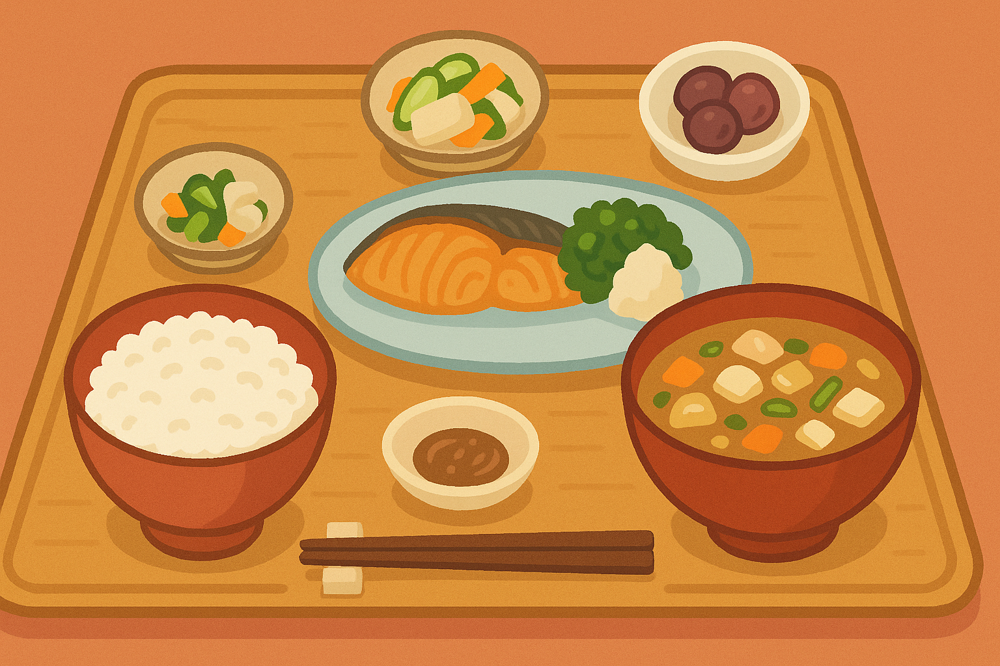
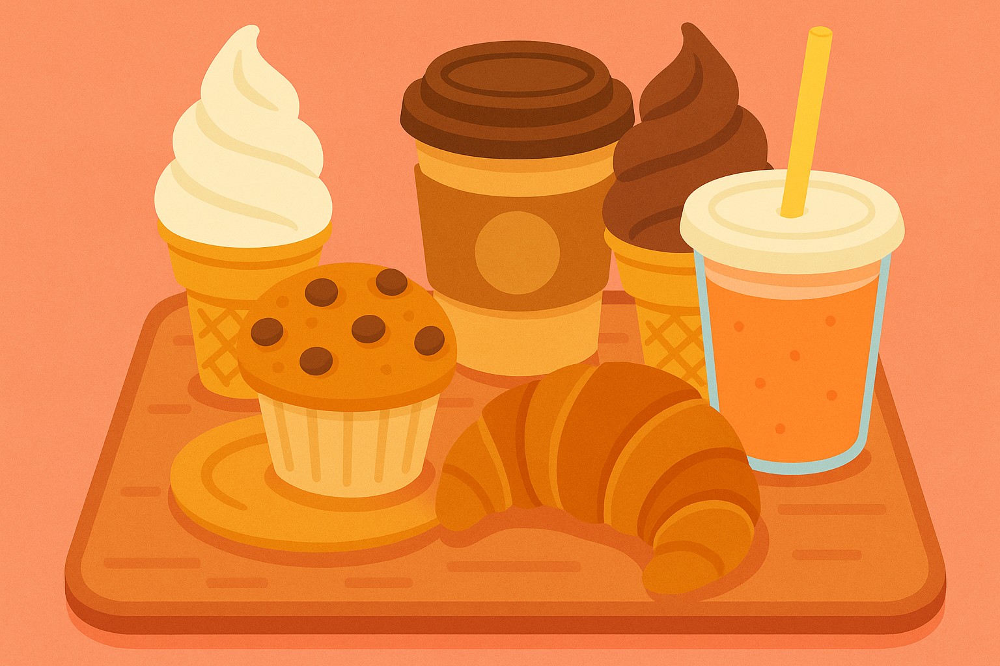
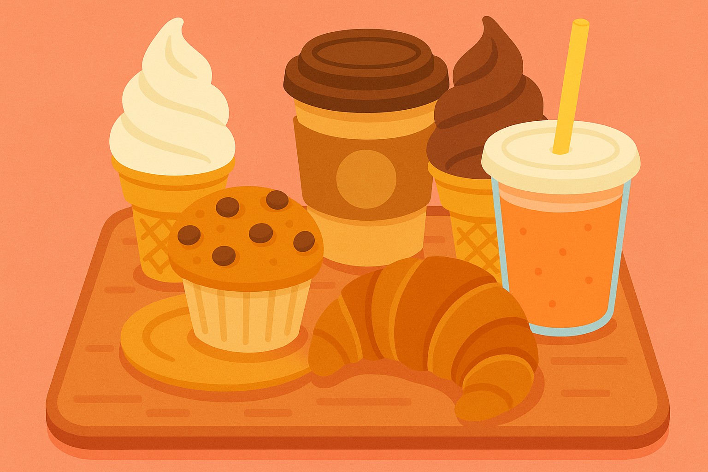

🛍 ショップ＆グルメ紹介
道の駅 Oitaaa のショップでは、地元大分の魅力が詰まった特産品を取り揃えています。
🍊 新鮮な農産物
朝採れ野菜や果物を毎日直送！旬の味をぜひご家庭で。
🥫 加工品・お土産
地元の味噌や柚子胡椒、オリジナルパッケージのスイーツも大人気！
🍰 お食事処
郷土料理の「だんご汁」や地元焙煎の「コーヒー」などもあります。
ホッと一息、ひと休みしませんか？
道の駅 Oitaaa のショップでは、地元大分の魅力が詰まった特産品を取り揃えています。
朝採れ野菜や果物を毎日直送！旬の味をぜひご家庭で。
地元の味噌や柚子胡椒、オリジナルパッケージのスイーツも大人気！
郷土料理の「だんご汁」や地元焙煎の「コーヒー」などもあります。
ホッと一息、ひと休みしませんか？
